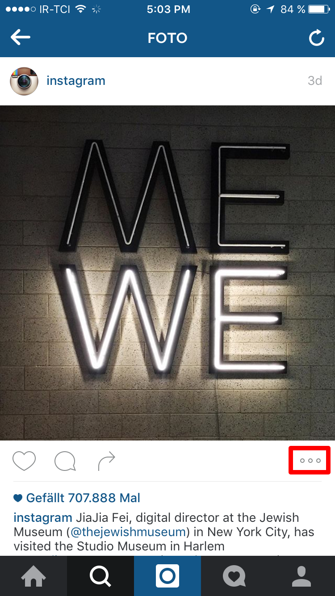
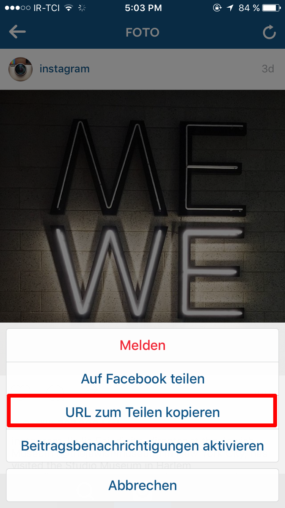
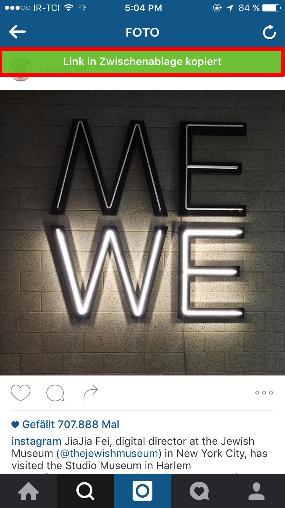
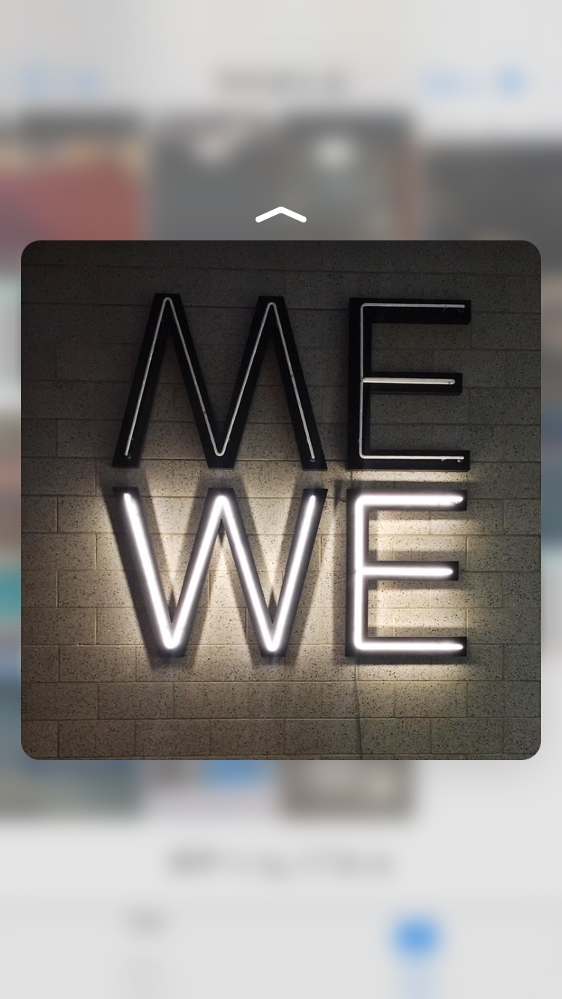

برای استفاده از برنامه ابتدا باید نرم افزار ایسنتاگرام را باز کنید و به عکس یا فیلمی که میخواهید دانلود کنید مراجعه کنید.

روی دکمه سه نقطه در پایین عکس مورد نظر تپ کنید.
و دکمه Copy Share URL را بفشارید.
با پیغام موفقیت در کپی آدرس مواجه میشوید، به برنامه باز گردید، آدرس را Paste کنید و دکمه دریافت و ذخیره را بزنید.
عکس یا فیلم به صورت اتوماتیک در گالری شما ذخیره میشود.
